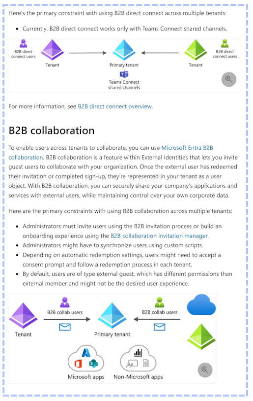
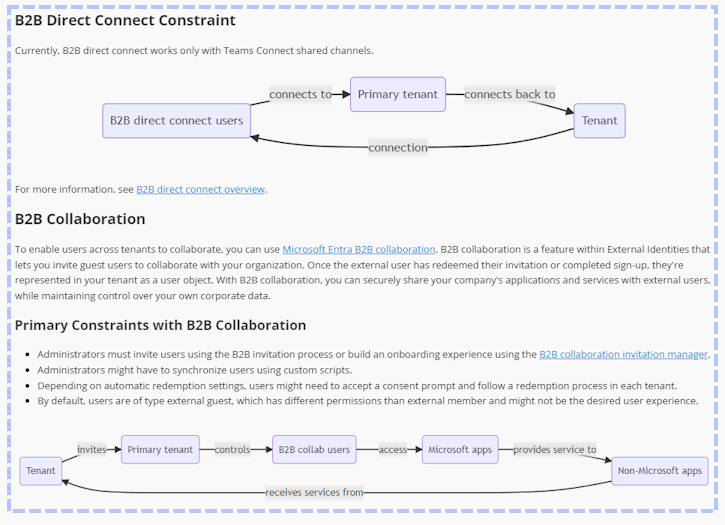

GPT-4o versus Azure Document Intelligence and Azure Computer Vision OCR
Introduction
It’s been about sixth months since my last post, Building Good Chatbots Part One, No-Code with Microsoft Copilot Studio and Azure AI Studio. At the end of that very long article, which I split in two for LinkedIn, I said I’d write another part called “Castle on a hill” and immediately got insanely busy with client work. This is not that article, but it is closely related as it is about techniques for processing PDF content to make it easier to use with generative AI systems.
PDF files can be a challenge: the format itself is old and very permissive, processing tables is hard, and they often contain images with important information. They also require a lot of space compared to text-based file formats which means they take longer to move around and read and can trigger file size limits in some ‘chat about your documents’ systems. For these and other reasons it is usually best to either extract the text or convert the file itself to a text-based format such as markdown.
If you are not familiar with markdown, it is a popular text-based format for documents and it looks like this:
On the left is the text, and on the right is the formatted output.
This post compares several generative AI options you can use to convert PDF’s to markdown:
- Azure Document Intelligence Layout Model
- GPT-4 Turbo with Vision (turbo-2024-04-09)
- GPT-4o
- GPT-4 Turbo with Vision (vision-preview) with Azure Computer Vision OCR
- GPT-4o and Azure Document Intelligence Layout Model
Note: as of the time of this writing (May 18, 2024), turbo-2024-04-09 is not compatible with the Azure Computer Vision OCR extensions and GPT-4o is not available in Azure. To fully use the notebooks referenced in this post, you will need both Azure and Open AI subscriptions.
In the end you will understand how to combine Azure Document Intelligence OCR with GPT4o to transform binary PDF content like this:
Into pure text in markdown format which displays like this:
Without losing the information displayed in tables and images, for around 3 cents ($0.03) per page.
Why this matters
In my previous post, I explained a little about solving hallucinations with retrieval augmented generation. To summarize, the easiest way to prevent hallucinations is to provide the information required to answer the user’s question to the LLM in a prompt that contains the question and instructions to answer the question based on the provided information.
This ‘one simple trick’ requires you to have the information somewhere, such as a search index, and to be able to find the right information for the question when the user asks.
PDFs and other document formats that contain images such as figures are challenging because simple text extraction loses all the visual information and because the document formatting itself conveys information about the relationships between whatever is on the page. Tables are an example of this. Correctly extracting tables from PDFs is a notoriously difficult task.
I will say flatly that, if you have complex PDF content and you upload it to any off-the-shelf chat-on-your-data product today, you are very likely to be disappointed by the resulting solution – especially if it is ready to answer questions within a few seconds. If it is fast, you can be sure it didn’t do more than extract the text.
Baseline: Azure AI Studio and Search with Hybrid Vector/Keyword search
As a baseline I am using a pdf of the entra identity multi-tenant-organizations documentation from Microsoft Learn. I selected it because I have been reading it all recently and am familiar with its contents and because it contains challenging tables, diagrams, and other content.
Azure AI Studio and Azure AI Search
I will not cover the details of setting it up here, but I created a new index in Azure AI Search by uploading entra-identity-multi-tenant-organizations.pdf in the Azure AI Studio Chat Playground with the vector hybrid options and embeddings.
The test index
When you create an index this way, AI Studio creates a job using a docker image which ingests the content and builds the index. The longest running step is typically “Crack, Chuck, and Embed” which cracks open the document, chunks it into pieces of text, and creates embeddings for the vector search index from each chunk.
When the job completes, you can test the index in Azure AI Search. The ** Search explorer ** tab [DTW] shows that 198 documents are in the index because the job created a chunk from each page of the original PDF file. This page is of interest it contains several elements: text, a table, and images.
Lost Information
The original page of the PDF looks like this:
And the result of the search looks like this:
As you can see, the text itself has odd spaces and the meaning conveyed by the table is completely lost. Assuming we can somehow infer the positioning of the check marks in the columns from the white space is wrong as there is not enough whitespace on the first row. An LLM is likely to make this mistake and give incorrect answers as a result.
There are additional challenges, but the final example I will give here is shown in the next image:
This content has a page break and an image. I already explained that the information in the image is lost, but even if it wasn’t the position of the page break ensures that the section will be split across chunks. It is unlikely that a search that finds the first chunk will naturally include the second page which might be very important. Were this a markdown document, the headings could be used to keep related text in the same chunk except for cases where the text under a heading is longer than the chunk size.
For completeness, a notebook, PdfToTextPages.ipynb, which chunks the test pdf to pages of text is located in this repo.
PDF to Markdown Options
Option One: Azure Document Intelligence Layout Model
First up is Azure Document Intelligence with the Layout Model. Of the notebooks related to this article, it is the only based on C# and .NET. The rest are python. My version is based on this sample by James Croft.
This service is part of the approach that I recommend today based on the work that is the subject of this article, but the first version is notable for the following reasons:
- It can produce a single markdown file from a PDF with little more than a line of code
- It is very fast, processing a 198 page PFD in less than a minute
- It provided accurate results for table contents and long numbers
- It is the least expensive single option at one cent per page
However, by itself it has several weaknesses:
- The markdown formatting is inconsistent
- It is OCR only and does not extract meaning from images and diagrams
The page with the table from the baseline looks like this:
The table content is correct, and the formatting is present, but not the formatting is not very good.
PDF to Images
Each of the remaining options starts by turning the PDF into a series of image files for processing. A notebook to perform this task, PdfToPageImages.ipynb, is in this repository, but the repository also contains the images used by the notebooks.
Option Two: gpt-4-turbo-2024-04-09 (GPT 4 Turbo with Vision) –OR – GPT-4o (Omni)
GPT-4-Turbo, notebook, and GPT-4o notebook are multimodal models which can reason against images. We can send the image directly to the LLM with a prompt to create a page of markdown.
Sample Prompt
As I progressed through the options I refined this prompt and there is a better version at the end, but this was my first version.
This key part: Describe charts and images as best you can and, when possible use mermaidjs format, adds an ability that Doc Intelligence alone lacks, which is the ability to describe images. There is no reason why the description must only be text, and so I asked the LLM to create diagrams.
Now this image (the original):

Became this markdown which includes descriptions of the visual content including some mermaid diagrams:

Unfortunately, it changed a few things in the process and the output is consistently untrustworthy. For example:
The table looks good, BUT it is factually incorrect and an example of a hallucination. In fact, every version of GPT-4, including the newest Omni, failed consistently to produce this table correctly.
A much more serious issue present in each of the GPT-4 models I tried was transcription of digits. Consider this source content:
The “VRS code:” is 886249. The hallucination is easy to observe. On one run, GPT-4o turned it into it to 286492
On another run, GPT-4-Turbo-2024-04-09 transcribed it to 882469
I honestly don’t think I observed a single success on this test without using some form of real OCR such as Azure Document Intelligence or Azure Computer Vision.
Differences between GPT-4-Turbo-2024 and GPT-4o
I personally found GPT-4-Turbo-2024 to be a little better with my small sample with markdown and image descriptions. But each made serious mistakes with the OCR that would create false answers were the result used for grounding. That said, GPT-4o was consistently around 30% faster and costs 50% less.
Conclusion on Option Two
If precise and accurate results are crucial, solutions using only GPT-4-Turbo-2024 and GPT-4o without OCR are problematic.
Option Three: gpt-4-vision-preview with Azure Computer Vision OCR
From How to use the GPT-4 Turbo with Vision model - Azure OpenAI Service | Microsoft Learn:
The notebooks for this option are notebook with OCR and notebook with OCR and grounding.
Good results, but not recommended
This combination yields the best results of the tested options (so far) but there are three issues:
- They are the most expensive at approximately $0.05-$0.07 per page
- The combination is the slowest at approximately 40-50 per seconds per page
- The reliance on proprietary Microsoft extensions
The extensions are detailed in the MS doc linked above. My objection is not so much that they are proprietary as that using them is a risk, and Microsoft has not done a good job keeping them up to date. At an API level, I can’t imagine why one can only use GPT-4-Vision-Preview and not the better, faster, and cheaper GPT-4-Turbo-2024 other than that MS hasn’t gotten around to changing the config, or perhaps that they don’t foresee this feature ever exiting preview and becoming generally available.
Option Four (WINNER!!!): Azure Document Intelligence OCR and GPT-4o
Fortunately, you don’t need to take any chances with a proprietary extension when you can easily do the same thing while exercising full control. The final notebook, v4omni-image-plus-docIntelOcr.ipynb,] sends the text of OCR’d markdown of a single page created from an image and the following prompt to GPT-4o.
Sample Prompt
The provided image is a page of a document.
The following markdown formatted text is a true and accurate but incomplete conversion of the provided image. Information contained in figures and other illustrations is missing.
MARKDOWN START
MARKDOWN TEXT HEREMARKDOWN END
Create new markdown that contains the EXACT original text and EXACT original tables WITHOUT alteration, while ADDING full text descriptions in place of each figure or illustration.
Following each text description, consider if it is possible to further describe the figure or illustration using valid mermaidjs syntax and do so taking care to avoid syntax errors.
Following these guidelines ensures valid and correctly rendered MermaidJS diagrams.
- Node IDs: Use only alphanumeric characters and underscores (_). Avoid spaces and other special characters.
- Labels with Special Characters: Avoid special characters in labels. Enclose labels with spaces or special characters in double quotes within brackets.
Example
graph TD;OwnerTenantC["Owner tenant (C)"] --> MemberTenantA["Member tenant (A)"]
OwnerTenantC["Owner tenant (C)"] --> MemberTenantB["Member tenant (B)"]
MemberTenantA["Member tenant (A)"] --> MemberTenantB["Member tenant (B)"]
Correct Usage
- Node ID: OwnerTenantC
- Label: "Owner tenant (C)"
Avoid
- Opening or closing params and other special characters in labels
- Node IDs with spaces or special characters: Owner tenant (C)
- Labels without quotes: [Owner tenant (C)]
Note that to use the notebook, you must first use the PdfToPageImages notebook to create images and then use the DocIntelligencePipeline notebook to convert the single page images from the PDFs into individual markdown files.
This prompt grounds the text from the high-quality OCR from Document Intelligence with the generative capabilities of GPT-4o to insert image descriptions and well formatted mermaid diagrams.
The process costs around 3 cents ($0.03) per page and took less than 10 seconds per page on average.
Sample Output
Interestingly, in some cases GPT-4o elected to add diagrams where previously there were none. This sequence diagram is correct and does not appear in the source image! Unfortunately, it is a hallucination. In fact, although most of the mermaid diagrams are correct, they often have errors. I’m very interested in this behavior and plan to spend much more time on it. The model might do a much better job with mermaid alternatives such as PlantUml.
The Index
Earlier, I showed the Search Explorer in Azure AI Search using an index based on the PDF. Here is the index for the markdown file.
The index has fewer chunks and takes up less space while containing much of the information lost in the original translation. This is the content for the same page in the new index.
Final Thoughts
Over a year ago now, the amazing Ted Chiang wrote ChatGPT Is a Blurry JPEG of the Web. The multimodal capabilities of models like GPT-4o show that his interesting and thoughtful perspective is quite incorrect. These tools give us the ability to refine information and project it in new and interesting ways by combining text, sound, and vision to extract meaning. We did not have this ability before, and it is as fundamental to our future as the printing press was to our ancestors.